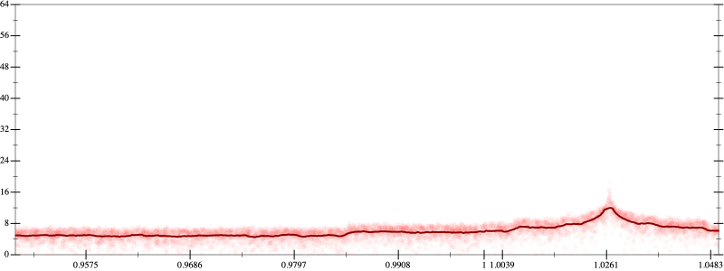
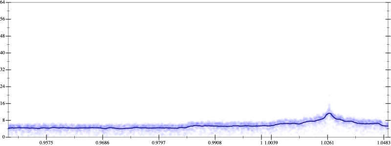
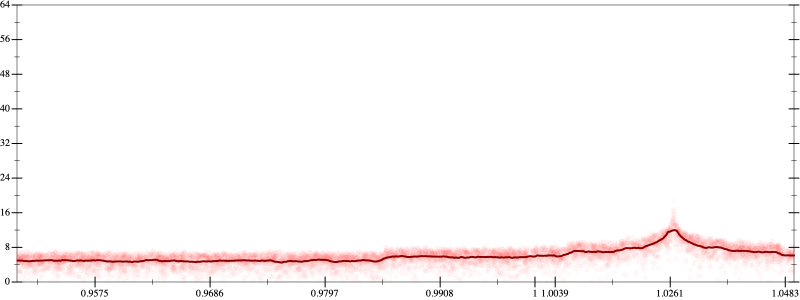
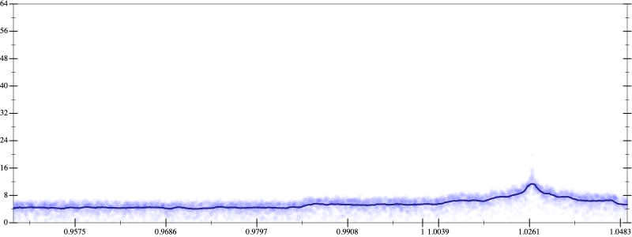

Initial program 6.0
\[\left(\left(\left(\left(\left(\left(1.0 + -7.0 \cdot x\right) + 10.5 \cdot \left(x \cdot x\right)\right) + -5.833333 \cdot \left(\left(x \cdot x\right) \cdot x\right)\right) + 1.458333 \cdot \left(\left(\left(x \cdot x\right) \cdot x\right) \cdot x\right)\right) + -0.175 \cdot \left(\left(\left(\left(x \cdot x\right) \cdot x\right) \cdot x\right) \cdot x\right)\right) + 0.009722 \cdot \left(\left(\left(\left(\left(x \cdot x\right) \cdot x\right) \cdot x\right) \cdot x\right) \cdot x\right)\right) + -0.000198 \cdot \left(\left(\left(\left(\left(\left(x \cdot x\right) \cdot x\right) \cdot x\right) \cdot x\right) \cdot x\right) \cdot x\right)\]
Applied simplify5.6
\[\leadsto \color{blue}{\left(\left(x \cdot x\right) \cdot \left(10.5 + -5.833333 \cdot x\right) + \left(x \cdot -7.0 + 1.0\right)\right) + \left(\left(\left(x \cdot x\right) \cdot \left(x \cdot x\right)\right) \cdot \left(1.458333 + -0.175 \cdot x\right) + \left({x}^{3} \cdot {x}^{3}\right) \cdot \left(-0.000198 \cdot x + 0.009722\right)\right)}\]
- Using strategy
rm Applied add-cbrt-cube5.6
\[\leadsto \left(\left(x \cdot x\right) \cdot \left(10.5 + -5.833333 \cdot x\right) + \left(x \cdot -7.0 + 1.0\right)\right) + \left(\left(\left(x \cdot x\right) \cdot \color{blue}{\sqrt[3]{\left(\left(x \cdot x\right) \cdot \left(x \cdot x\right)\right) \cdot \left(x \cdot x\right)}}\right) \cdot \left(1.458333 + -0.175 \cdot x\right) + \left({x}^{3} \cdot {x}^{3}\right) \cdot \left(-0.000198 \cdot x + 0.009722\right)\right)\]
Applied add-cbrt-cube5.6
\[\leadsto \left(\left(x \cdot x\right) \cdot \left(10.5 + -5.833333 \cdot x\right) + \left(x \cdot -7.0 + 1.0\right)\right) + \left(\left(\color{blue}{\sqrt[3]{\left(\left(x \cdot x\right) \cdot \left(x \cdot x\right)\right) \cdot \left(x \cdot x\right)}} \cdot \sqrt[3]{\left(\left(x \cdot x\right) \cdot \left(x \cdot x\right)\right) \cdot \left(x \cdot x\right)}\right) \cdot \left(1.458333 + -0.175 \cdot x\right) + \left({x}^{3} \cdot {x}^{3}\right) \cdot \left(-0.000198 \cdot x + 0.009722\right)\right)\]
Applied cbrt-unprod5.6
\[\leadsto \left(\left(x \cdot x\right) \cdot \left(10.5 + -5.833333 \cdot x\right) + \left(x \cdot -7.0 + 1.0\right)\right) + \left(\color{blue}{\sqrt[3]{\left(\left(\left(x \cdot x\right) \cdot \left(x \cdot x\right)\right) \cdot \left(x \cdot x\right)\right) \cdot \left(\left(\left(x \cdot x\right) \cdot \left(x \cdot x\right)\right) \cdot \left(x \cdot x\right)\right)}} \cdot \left(1.458333 + -0.175 \cdot x\right) + \left({x}^{3} \cdot {x}^{3}\right) \cdot \left(-0.000198 \cdot x + 0.009722\right)\right)\]
Applied simplify5.5
\[\leadsto \left(\left(x \cdot x\right) \cdot \left(10.5 + -5.833333 \cdot x\right) + \left(x \cdot -7.0 + 1.0\right)\right) + \left(\sqrt[3]{\color{blue}{{\left({x}^{3}\right)}^{\left(3 + 1\right)}}} \cdot \left(1.458333 + -0.175 \cdot x\right) + \left({x}^{3} \cdot {x}^{3}\right) \cdot \left(-0.000198 \cdot x + 0.009722\right)\right)\]
- Using strategy
rm Applied add-log-exp5.5
\[\leadsto \left(\left(x \cdot x\right) \cdot \left(10.5 + -5.833333 \cdot x\right) + \left(x \cdot -7.0 + 1.0\right)\right) + \left(\sqrt[3]{{\left({x}^{3}\right)}^{\left(3 + 1\right)}} \cdot \left(1.458333 + -0.175 \cdot x\right) + \color{blue}{\log \left(e^{\left({x}^{3} \cdot {x}^{3}\right) \cdot \left(-0.000198 \cdot x + 0.009722\right)}\right)}\right)\]
Applied add-log-exp5.5
\[\leadsto \left(\left(x \cdot x\right) \cdot \left(10.5 + -5.833333 \cdot x\right) + \left(x \cdot -7.0 + 1.0\right)\right) + \left(\color{blue}{\log \left(e^{\sqrt[3]{{\left({x}^{3}\right)}^{\left(3 + 1\right)}} \cdot \left(1.458333 + -0.175 \cdot x\right)}\right)} + \log \left(e^{\left({x}^{3} \cdot {x}^{3}\right) \cdot \left(-0.000198 \cdot x + 0.009722\right)}\right)\right)\]
Applied sum-log5.5
\[\leadsto \left(\left(x \cdot x\right) \cdot \left(10.5 + -5.833333 \cdot x\right) + \left(x \cdot -7.0 + 1.0\right)\right) + \color{blue}{\log \left(e^{\sqrt[3]{{\left({x}^{3}\right)}^{\left(3 + 1\right)}} \cdot \left(1.458333 + -0.175 \cdot x\right)} \cdot e^{\left({x}^{3} \cdot {x}^{3}\right) \cdot \left(-0.000198 \cdot x + 0.009722\right)}\right)}\]
Applied add-log-exp5.5
\[\leadsto \left(\left(x \cdot x\right) \cdot \left(10.5 + -5.833333 \cdot x\right) + \color{blue}{\log \left(e^{x \cdot -7.0 + 1.0}\right)}\right) + \log \left(e^{\sqrt[3]{{\left({x}^{3}\right)}^{\left(3 + 1\right)}} \cdot \left(1.458333 + -0.175 \cdot x\right)} \cdot e^{\left({x}^{3} \cdot {x}^{3}\right) \cdot \left(-0.000198 \cdot x + 0.009722\right)}\right)\]
Applied add-log-exp5.5
\[\leadsto \left(\color{blue}{\log \left(e^{\left(x \cdot x\right) \cdot \left(10.5 + -5.833333 \cdot x\right)}\right)} + \log \left(e^{x \cdot -7.0 + 1.0}\right)\right) + \log \left(e^{\sqrt[3]{{\left({x}^{3}\right)}^{\left(3 + 1\right)}} \cdot \left(1.458333 + -0.175 \cdot x\right)} \cdot e^{\left({x}^{3} \cdot {x}^{3}\right) \cdot \left(-0.000198 \cdot x + 0.009722\right)}\right)\]
Applied sum-log5.5
\[\leadsto \color{blue}{\log \left(e^{\left(x \cdot x\right) \cdot \left(10.5 + -5.833333 \cdot x\right)} \cdot e^{x \cdot -7.0 + 1.0}\right)} + \log \left(e^{\sqrt[3]{{\left({x}^{3}\right)}^{\left(3 + 1\right)}} \cdot \left(1.458333 + -0.175 \cdot x\right)} \cdot e^{\left({x}^{3} \cdot {x}^{3}\right) \cdot \left(-0.000198 \cdot x + 0.009722\right)}\right)\]
Applied sum-log5.5
\[\leadsto \color{blue}{\log \left(\left(e^{\left(x \cdot x\right) \cdot \left(10.5 + -5.833333 \cdot x\right)} \cdot e^{x \cdot -7.0 + 1.0}\right) \cdot \left(e^{\sqrt[3]{{\left({x}^{3}\right)}^{\left(3 + 1\right)}} \cdot \left(1.458333 + -0.175 \cdot x\right)} \cdot e^{\left({x}^{3} \cdot {x}^{3}\right) \cdot \left(-0.000198 \cdot x + 0.009722\right)}\right)\right)}\]
Applied simplify5.6
\[\leadsto \log \color{blue}{\left(e^{\left(x \cdot -7.0 + 1.0\right) + \left(0.009722 + -0.000198 \cdot x\right) \cdot \left({x}^{3} \cdot {x}^{3}\right)} \cdot \left({\left(e^{x \cdot x}\right)}^{\left(-5.833333 \cdot x + 10.5\right)} \cdot {\left(e^{x \cdot -0.175 + 1.458333}\right)}^{\left(\sqrt[3]{{\left({x}^{3}\right)}^{\left(1 + 3\right)}}\right)}\right)\right)}\]
- Using strategy
rm Applied exp-sum5.5
\[\leadsto \log \left(\color{blue}{\left(e^{x \cdot -7.0 + 1.0} \cdot e^{\left(0.009722 + -0.000198 \cdot x\right) \cdot \left({x}^{3} \cdot {x}^{3}\right)}\right)} \cdot \left({\left(e^{x \cdot x}\right)}^{\left(-5.833333 \cdot x + 10.5\right)} \cdot {\left(e^{x \cdot -0.175 + 1.458333}\right)}^{\left(\sqrt[3]{{\left({x}^{3}\right)}^{\left(1 + 3\right)}}\right)}\right)\right)\]
Applied simplify5.5
\[\leadsto \log \left(\left(e^{x \cdot -7.0 + 1.0} \cdot \color{blue}{e^{{\left(x \cdot x\right)}^{3} \cdot \left(x \cdot -0.000198 + 0.009722\right)}}\right) \cdot \left({\left(e^{x \cdot x}\right)}^{\left(-5.833333 \cdot x + 10.5\right)} \cdot {\left(e^{x \cdot -0.175 + 1.458333}\right)}^{\left(\sqrt[3]{{\left({x}^{3}\right)}^{\left(1 + 3\right)}}\right)}\right)\right)\]
 
